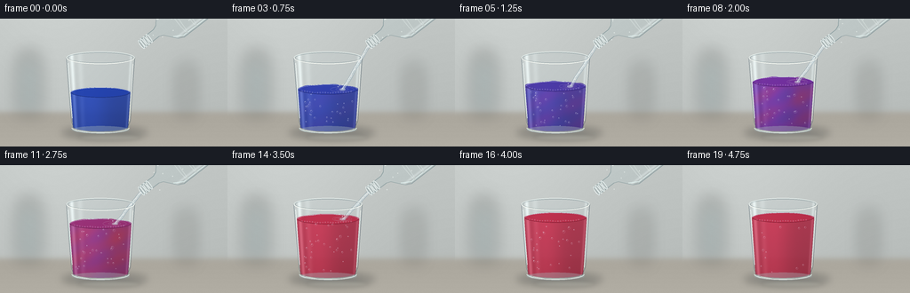
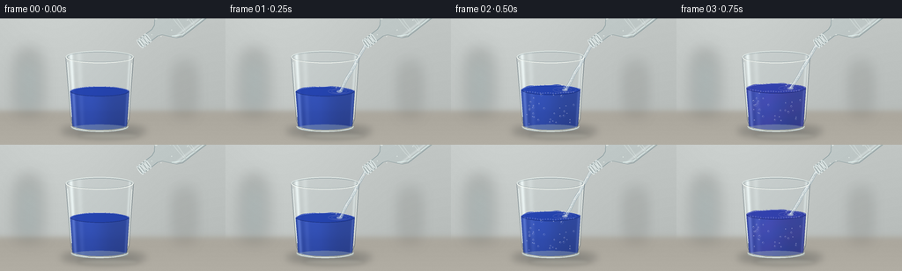

CODING AGENTS AS PIXEL WORLD MODELS
traex/GPT-6.1-Sol · phygen_148
点击播放 · 原生 RGB 像素
逐轮保存的候选
回放视频、检查图与代码变化。
每份候选均可单独播放。实际图片检查记录在下方工具轨迹中。
候选 01播放与检查图
点击播放 · 原生 RGB 像素


展开代码变化
--- 上一保存版本
+++ 本次保存版本
@@ -0,0 +1,216 @@
+from pathlib import Path
+import numpy as np
+from PIL import Image, ImageDraw, ImageFilter
+import artifact_io
+
+ROOT=Path(__file__).resolve().parent
+W,H,S=256,144,4
+w,h=W*S,H*S
+Y,X=np.mgrid[0:h,0:w].astype(float)/S
+rng=np.random.default_rng(12)
+# A quiet, shallow-focus laboratory countertop in soft window light.
+base=np.zeros((h,w,3),float)
+wall=np.array([193.,198.,196.]); table=np.array([171.,167.,157.])
+for c in range(3):
+ base[:,:,c]=wall[c] + 11*np.exp(-((X-63)/100)**2)-.09*Y
+transition=1/(1+np.exp(-(Y-105)/1.8))
+for c in range(3):base[:,:,c]=base[:,:,c]*(1-transition)+(table[c]+.19*(Y-107))*transition
+# Extremely soft defocused objects in the background.
+bg=Image.fromarray(np.uint8(np.clip(base,0,255))).convert('RGB')
+blur=Image.new('RGBA',(w,h));d=ImageDraw.Draw(blur)
+def ellipse(d,box,fill,width=None):
+ b=tuple(int(v*S) for v in box)
+ if width is None:d.ellipse(b,fill=fill)
+ else:d.ellipse(b,outline=fill,width=max(1,int(width*S)))
+def line(d,pts,fill,width):d.line([(round(x*S),round(y*S)) for x,y in pts],fill=fill,width=max(1,round(width*S)),joint='curve')
+def polygon(d,pts,fill):d.polygon([(int(x*S),int(y*S)) for x,y in pts],fill=fill)
+def composite(im,layer):return Image.alpha_composite(im.convert('RGBA'),layer)
+d.rounded_rectangle((19*S,46*S,46*S,107*S),radius=6*S,fill=(97,123,126,65))
+d.rectangle((25*S,38*S,40*S,50*S),fill=(145,147,137,100))
+d.rectangle((204*S,53*S,215*S,107*S),fill=(225,228,217,100))
+bg=composite(bg,blur.filter(ImageFilter.GaussianBlur(9*S)))
+# Contact shadow and broad caustics remain anchored to the table.
+shadow=Image.new('RGBA',(w,h));d=ImageDraw.Draw(shadow)
+ellipse(d,(69,121,166,136),(41,45,47,64));ellipse(d,(81,125,152,132),(26,37,43,75))
+bg=composite(bg,shadow.filter(ImageFilter.GaussianBlur(4*S)))
+shine=Image.new('RGBA',(w,h));d=ImageDraw.Draw(shine)
+ellipse(d,(88,130,158,137),(238,244,229,36));bg=composite(bg,shine.filter(ImageFilter.GaussianBlur(2*S)))
+base=np.asarray(bg.convert('RGB')).astype(float)
+# Glass wall: taper and a thick optical base.
+cx=113.0
+half=38.5-(Y-44)*.072
+u=(X-cx)/half
+side=(np.abs(u)<1)&(Y>=44)&(Y<=123)
+bottom=((X-cx)/32.5)**2+((Y-123)/7.1)**2<1
+rim=((X-cx)/38.5)**2+((Y-44)/7.2)**2<1
+glass=side|bottom|rim
+refractx=np.clip(np.round((X + 3.2*u*(np.abs(u)**2))*S),0,w-1).astype(int)
+refracty=np.clip(np.round((Y+.7*np.sin(u*3))*S),0,h-1).astype(int)
+refracted=base[refracty,refractx]
+static=base.copy(); static[glass]=refracted[glass]*.965+np.array([7,9,10])
+# Stable fine texture avoids artificial temporal flicker.
+noise=rng.normal(0,.47,(h,w,1))
+# Reusable bubble seeds, which rise and are born at the impact point.
+seeds=[(rng.uniform(88,139),rng.uniform(0,1),rng.uniform(.45,1.4),rng.uniform(.8,1.4)) for _ in range(35)]
+
+def bottle(im,amount):
+ # Transparent unlabeled soda bottle, tipped down into the tumbler.
+ mouth=np.array([159.,29.]); axis=np.array([.79,-.613]); norm=np.array([.613,.79])
+ def pt(a,b):return tuple(mouth+axis*a+norm*b)
+ # Smooth shoulder expanding from the narrow neck.
+ boundary=[(0,-5),(21,-5),(26,-7),(31,-13),(37,-20),(43,-23),(113,-23),(118,-17),(119,17),(113,23),(43,23),(37,20),(31,13),(26,7),(21,5),(0,5)]
+ mask=Image.new('L',(w,h));dm=ImageDraw.Draw(mask);polygon(dm,[pt(a,b) for a,b in boundary],255)
+ m=np.asarray(mask).astype(float)/255
+ a=(X-mouth[0])*axis[0]+(Y-mouth[1])*axis[1]
+ b=(X-mouth[0])*norm[0]+(Y-mouth[1])*norm[1]
+ arr=np.array(im.convert('RGB')).astype(float)
+ # Visible transparent walls and clear water with soft tubular refraction.
+ lit=12*np.exp(-((b+17)/3.6)**2)+17*np.exp(-((b-18)/1.3)**2)-14*np.exp(-((b-21)/1.4)**2)
+ inside=arr*.94+np.array([8,12,13])+lit[:,:,None]
+ arr=arr*(1-m[:,:,None])+inside*m[:,:,None]
+ im=Image.fromarray(np.uint8(np.clip(arr,0,255))).convert('RGBA')
+ ov=Image.new('RGBA',(w,h));d=ImageDraw.Draw(ov)
+ line(d,[pt(a,b) for a,b in boundary+[boundary[0]]],(90,119,125,112),.65)
+ line(d,[pt(32,-11),pt(40,-19),pt(105,-19)],(249,255,252,152),1.7)
+ line(d,[pt(34,15),pt(44,21),pt(107,21)],(232,249,247,171),1.2)
+ # molded bottle ribs, rim and screw threads
+ for j in [49,62,76,90]:
+ pts=[pt(j+1.7*np.cos(t),22*np.sin(t)) for t in np.linspace(0,2*np.pi,70)]
+ line(d,pts,(240,250,246,79),.65)
+ for j in [0,3,7,11]:
+ pts=[pt(j+1.4*np.cos(t),5.6*np.sin(t)) for t in np.linspace(0,2*np.pi,50)]
+ line(d,pts,(239,249,248,196),.7)
+ line(d,[pt(j,-5),pt(j,4)],(96,121,125,65),.5)
+ # A few tiny bubbles in the neck make the sparkling water legible.
+ for j in range(8):
+ pp=pt(17+j*7, np.sin(j*2.4+amount*2)*12)
+ ellipse(d,(pp[0]-.55,pp[1]-.55,pp[0]+.55,pp[1]+.55),(244,251,247,130))
+ return composite(im,ov)
+
+frames=[]
+for k in range(20):
+ t=k/19
+ pouring=1<=k<=15
+ volume=np.clip((k-1)/14,0,1)
+ # Soda's carbonic acid turns blue litmus through violet to red.
+ acid=np.clip((k-2)/12,0,1)
+ level=83-24*volume
+ halfliquid=36-(Y-47)*.065
+ un=(X-cx)/halfliquid
+ wave=(.6*np.sin((X-104)*.2+k*.7)+.25*np.sin((X-103)*.4-k))*(1 if pouring else .25)
+ topcurve=level-5.5*np.sqrt(np.clip(1-un**2,0,1))+wave
+ liquid=(np.abs(un)<1)&(Y>topcurve)&(Y<122.7)
+ liquid |= (((X-cx)/30.7)**2+((Y-122.0)/4.8)**2<1)&(Y>level)
+ # Diffusion has wispy local variations but reaches a uniform acidic red.
+ q=acid+.11*np.sin((X-111)*.13+(Y-level)*.13+k*.25)*np.sin((Y-level)*.12)*np.sin(np.pi*acid)
+ q+=.14*np.exp(-((X-130)/10)**2-((Y-level-12)/24)**2)*np.sin(np.pi*acid)
+ q=np.clip(q,0,1)
+ blue=np.array([36,69,184]);purple=np.array([119,48,167]);red=np.array([199,49,79])
+ a=np.minimum(q*2,1)[:,:,None];b=np.maximum(q*2-1,0)[:,:,None]
+ col=blue*(1-a)+purple*a;col=col*(1-b)+red*b
+ # Beer-Lambert-inspired optical depth: dark edges, luminous body.
+ depth=.82+.18*np.sqrt(np.clip(1-un**2,0,1))
+ v=((Y-level)/(124-level))
+ mult=(.83+.18*np.exp(-((X-101)/20)**2))*(1-.10*v)
+ arr=static.copy()
+ litcol=col*mult[:,:,None]
+ trans=.10+.10*(1-depth)
+ litcol=litcol*(1-trans[:,:,None])+base*trans[:,:,None]
+ arr[liquid]=litcol[liquid]
+ # Cylindrical white window reflections, distorted and diluted by the liquid.
+ glare=39*np.exp(-((u+.84)/.055)**2)+22*np.exp(-((u-.89)/.035)**2)+11*np.exp(-((u+.60)/.08)**2)
+ arr[glass]+=glare[glass,None]*np.array([.94,1,1])
+ # Thick bottom transmits pale highlights and the tint of the liquid.
+ foot=((X-cx)/32.5)**2+((Y-125)/4.3)**2<1
+ arr[foot]=arr[foot]*.62+np.array([165,181,184])*.38
+ arr+=noise
+ im=Image.fromarray(np.uint8(np.clip(arr,0,255))).convert('RGBA')
+ ov=Image.new('RGBA',(w,h));d=ImageDraw.Draw(ov)
+ # Liquid meniscus, seen as a shallow elliptical plane.
+ hc=35.1-(level-47)*.065
+ surfacecol=blue*(1-min(acid*2,1))+purple*min(acid*2,1)
+ surfacecol=surfacecol*(1-max(acid*2-1,0))+red*max(acid*2-1,0)
+ ellipse(d,(cx-hc,level-5.5,cx+hc,level+5.5),tuple(np.uint8(surfacecol*.94))+ (205,))
+ # Elliptical reflected light on the back meniscus.
+ points=[(cx+hc*np.cos(a),level+5.5*np.sin(a)) for a in np.linspace(np.pi,2*np.pi,80)]
+ line(d,points,(204,209,244,136),.62)
+ points=[(cx+hc*np.cos(a),level+5.5*np.sin(a)) for a in np.linspace(0,np.pi,80)]
+ line(d,points,tuple(np.uint8(surfacecol*.65))+(190,),.7)
+ if pouring:
+ # Small concentric ripples and the clear impact crater.
+ for r in [4,8,12]:
+ rr=r+1.2*np.sin(k*.8+r)
+ ellipse(d,(129-rr,level-rr*.23,129+rr,level+rr*.23),(229,217,243,80),.44)
+ ellipse(d,(126,level-1.1,132.5,level+1.5),(210,223,238,130))
+ im=composite(im,ov)
+ # Soda bubbles travel upward through the solution, decreasing after pouring stops.
+ ov=Image.new('RGBA',(w,h));d=ImageDraw.Draw(ov)
+ if k>=2:
+ for j,(bx,phase,r,speed) in enumerate(seeds):
+ if k>=17 and j%3:continue
+ yy=121-((phase*59+(k-2)*4.6*speed)%(122-level))
+ xx=bx+1.2*np.sin(k*.42+j)+2*np.sin((yy-120)*.11+j)
+ if yy<level+5:continue
+ rr=r*(.78+.3*(121-yy)/(122-level))
+ ellipse(d,(xx-rr,yy-rr*1.1,xx+rr,yy+rr*1.1),(225,226,249,90),.35)
+ ellipse(d,(xx-rr*.55,yy-rr*.63,xx-rr*.04,yy-rr*.12),(251,250,255,171))
+ # A modest ring of tiny foam bubbles on the carbonation surface.
+ for j in range(20):
+ xx=84+j*2.9
+ yy=level+3.9*np.sqrt(max(0,1-((xx-cx)/hc)**2))+.3*np.sin(j+k)
+ rr=.35+.35*((j*7)%5)/5
+ ellipse(d,(xx-rr,yy-rr,xx+rr,yy+rr),(227,222,239,154),.32)
+ im=composite(im,ov)
+ # The translucent falling stream has bright edges and a refracted interior.
+ if pouring:
+ ov=Image.new('RGBA',(w,h));d=ImageDraw.Draw(ov)
+ stream=[]
+ for s in np.linspace(0,1,60):
+ xx=159-29*s+.5*np.sin(s*13+k*1.5)*s
+ yy=30+(level-30)*s
+ stream.append((xx,yy))
+ line(d,stream,(140,164,177,98),4.1)
+ line(d,[(x-.9,y) for x,y in stream],(241,249,249,193),.95)
+ line(d,[(x+.85,y) for x,y in stream],(226,238,242,145),.65)
+ for j in range(6):
+ s=((j*.17+k*.23)%1)
+ xx=159-29*s;yy=30+(level-30)*s
+ ellipse(d,(xx-.6,yy-1.1,xx+.6,yy+1.1),(252,253,253,119))
+ # restrained tiny droplets beside the impact
+ for j in range(3):
+ xx=128+(j-1)*4+np.sin(k+j)*2
+ yy=level-3-((k+j)%3)*1.2
+ ellipse(d,(xx-.5,yy-.8,xx+.5,yy+.8),(228,238,241,142))
+ im=composite(im,ov)
+ # Keep the bottle visible during pouring; then lift it out of the composition.
+ if k<=16:
+ im=bottle(im,volume)
+ else:
+ # bottle translated up and right as the pour ends
+ layer=Image.new('RGBA',(w,h),(0,0,0,0))
+ # use a local transparent drawing then translate only visible bottle pixels
+ # Render onto identical background and take the difference through its silhouette.
+ source=bottle(im,volume)
+ dx=(k-16)*20*S;dy=-(k-16)*13*S
+ mask=Image.new('L',(w,h));dm=ImageDraw.Draw(mask)
+ mouth=np.array([159.,29.]);axis=np.array([.79,-.613]);norm=np.array([.613,.79])
+ boundary=[(0,-6),(21,-6),(31,-14),(43,-24),(119,-24),(119,24),(43,24),(31,14),(21,6),(0,6)]
+ polygon(dm,[tuple(mouth+axis*a+norm*b) for a,b in boundary],255)
+ crop=Image.new('RGBA',(w,h));crop.paste(source,(0,0),mask)
+ shifted=Image.new('RGBA',(w,h));shifted.paste(crop,(dx,dy));im=composite(im,shifted)
+ # Glass edges are overlaid last; the rim catches hard, realistic white highlights.
+ ov=Image.new('RGBA',(w,h));d=ImageDraw.Draw(ov)
+ line(d,[(74.5,44),(77.3,79),(80.5,117),(84,124)],(79,97,106,110),.7)
+ line(d,[(151.5,44),(149.1,78),(146.6,115),(142,126)],(74,90,99,129),.7)
+ line(d,[(76.5,50),(78.7,83),(81.0,112)],(242,251,249,182),1)
+ line(d,[(149.5,51),(147.6,89),(145.5,115)],(245,249,244,185),.85)
+ ellipse(d,(74.5,36.8,151.5,51.2),(226,235,232,208),1.0)
+ ellipse(d,(76,38.2,150,50),(93,115,121,129),.6)
+ p=[(113+38*np.cos(a),44+6.8*np.sin(a)) for a in np.linspace(.05,np.pi-.06,80)]
+ line(d,p,(253,255,248,211),1.05)
+ p=[(113+32*np.cos(a),123+5.7*np.sin(a)) for a in np.linspace(0,np.pi,80)]
+ line(d,p,(227,242,239,190),1.1)
+ line(d,[(88,125.6),(102,128),(127,128),(139,125.9)],(250,253,242,168),.65)
+ im=composite(im,ov)
+ frames.append(np.asarray(im.convert('RGB').resize((W,H),Image.Resampling.LANCZOS)))
+artifact_io.save(np.stack(frames).astype(np.uint8),ROOT)
可观测工具轨迹
实际执行的命令与返回图片。
命令 1exit 0
/bin/bash -lc 'ls -la && cat prompt.txt && cat GENERATION_RULES.md && cat task_spec.json'
命令 2exit 0
/bin/bash -lc 'cat artifact_io.py'
命令 3exit 0
/bin/bash -lc "cat > generate.py <<'PY'
from pathlib import Path
import numpy as np
from PIL import Image, ImageDraw, ImageFilter
import artifact_io
ROOT=Path(__file__).resolve().parent
W,H,S=256,144,4
w,h=W*S,H*S
Y,X=np.mgrid[0:h,0:w].astype(float)/S
rng=np.random.default_rng(12)
# A quiet, shallow-focus laboratory countertop in soft window light.
base=np.zeros((h,w,3),float)
wall=np.array([193.,198.,196.]); table=np.array([171.,167.,157.])
for c in range(3):
base[:,:,c]=wall[c] + 11*np.exp(-((X-63)/100)**2)-.09*Y
transition=1/(1+np.exp(-(Y-105)/1.8))
for c in range(3):base[:,:,c]=base[:,:,c]*(1-transition)+(table[c]+.19*(Y-107))*transition
# Extremely soft defocused objects in the background.
bg=Image.fromarray(np.uint8(np.clip(base,0,255))).convert('RGB')
blur=Image.new('RGBA',(w,h));d=ImageDraw.Draw(blur)
def ellipse(d,box,fill,width=None):
b=tuple(int(v*S) for v in box)
if width is None:d.ellipse(b,fill=fill)
else:d.ellipse(b,outline=fill,width=max(1,int(width*S)))
def line(d,pts,fill,width):d.line([(round(x*S),round(y*S)) for x,y in pts],fill=fill,width=max(1,round(width*S)),joint='curve')
def polygon(d,pts,fill):d.polygon([(int(x*S),int(y*S)) for x,y in pts],fill=fill)
def composite(im,layer):return Image.alpha_composite(im.convert('RGBA'),layer)
d.rounded_rectangle((19*S,46*S,46*S,107*S),radius=6*S,fill=(97,123,126,65))
d.rectangle((25*S,38*S,40*S,50*S),fill=(145,147,137,100))
d.rectangle((204*S,53*S,215*S,107*S),fill=(225,228,217,100))
bg=composite(bg,blur.filter(ImageFilter.GaussianBlur(9*S)))
# Contact shadow and broad caustics remain anchored to the table.
shadow=Image.new('RGBA',(w,h));d=ImageDraw.Draw(shadow)
ellipse(d,(69,121,166,136),(41,45,47,64));ellipse(d,(81,125,152,132),(26,37,43,75))
bg=composite(bg,shadow.filter(ImageFilter.GaussianBlur(4*S)))
shine=Image.new('RGBA',(w,h));d=ImageDraw.Draw(shine)
ellipse(d,(88,130,158,137),(238,244,229,36));bg=composite(bg,shine.filter(ImageFilter.GaussianBlur(2*S)))
base=np.asarray(bg.convert('RGB')).astype(float)
# Glass wall: taper and a thick optical base.
cx=113.0
half=38.5-(Y-44)*.072
u=(X-cx)/half
side=(np.abs(u)<1)&(Y>=44)&(Y<=123)
bottom=((X-cx)/32.5)**2+((Y-123)/7.1)**2<1
rim=((X-cx)/38.5)**2+((Y-44)/7.2)**2<1
glass=side|bottom|rim
refractx=np.clip(np.round((X + 3.2*u*(np.abs(u)**2))*S),0,w-1).astype(int)
refracty=np.clip(np.round((Y+.7*np.sin(u*3))*S),0,h-1).astype(int)
refracted=base[refracty,refractx]
static=base.copy(); static[glass]=refracted[glass]*.965+np.array([7,9,10])
# Stable fine texture avoids artificial temporal flicker.
noise=rng.normal(0,.47,(h,w,1))
# Reusable bubble seeds, which rise and are born at the impact point.
seeds=[(rng.uniform(88,139),rng.uniform(0,1),rng.uniform(.45,1.4),rng.uniform(.8,1.4)) for _ in range(35)]
def bottle(im,amount):
# Transparent unlabeled soda bottle, tipped down into the tumbler.
mouth=np.array([159.,29.]); axis=np.array([.79,-.613]); norm=np.array([.613,.79])
def pt(a,b):return tuple(mouth+axis*a+norm*b)
# Smooth shoulder expanding from the narrow neck.
boundary=[(0,-5),(21,-5),(26,-7),(31,-13),(37,-20),(43,-23),(113,-23),(118,-17),(119,17),(113,23),(43,23),(37,20),(31,13),(26,7),(21,5),(0,5)]
mask=Image.new('L',(w,h));dm=ImageDraw.Draw(mask);polygon(dm,[pt(a,b) for a,b in boundary],255)
m=np.asarray(mask).astype(float)/255
a=(X-mouth[0])*axis[0]+(Y-mouth[1])*axis[1]
b=(X-mouth[0])*norm[0]+(Y-mouth[1])*norm[1]
arr=np.array(im.convert('RGB')).astype(float)
# Visible transparent walls and clear water with soft tubular refraction.
lit=12*np.exp(-((b+17)/3.6)**2)+17*np.exp(-((b-18)/1.3)**2)-14*np.exp(-((b-21)/1.4)**2)
inside=arr*.94+np.array([8,12,13])+lit[:,:,None]
arr=arr*(1-m[:,:,None])+inside*m[:,:,None]
im=Image.fromarray(np.uint8(np.clip(arr,0,255))).convert('RGBA')
ov=Image.new('RGBA',(w,h));d=ImageDraw.Draw(ov)
line(d,[pt(a,b) for a,b in boundary+[boundary[0]]],(90,119,125,112),.65)
line(d,[pt(32,-11),pt(40,-19),pt(105,-19)],(249,255,252,152),1.7)
line(d,[pt(34,15),pt(44,21),pt(107,21)],(232,249,247,171),1.2)
# molded bottle ribs, rim and screw threads
for j in [49,62,76,90]:
pts=[pt(j+1.7*np.cos(t),22*np.sin(t)) for t in np.linspace(0,2*np.pi,70)]
line(d,pts,(240,250,246,79),.65)
for j in [0,3,7,11]:
pts=[pt(j+1.4*np.cos(t),5.6*np.sin(t)) for t in np.linspace(0,2*np.pi,50)]
line(d,pts,(239,249,248,196),.7)
line(d,[pt(j,-5),pt(j,4)],(96,121,125,65),.5)
# A few tiny bubbles in the neck make the sparkling water legible.
for j in range(8):
pp=pt(17+j*7, np.sin(j*2.4+amount*2)*12)
ellipse(d,(pp[0]-.55,pp[1]-.55,pp[0]+.55,pp[1]+.55),(244,251,247,130))
return composite(im,ov)
frames=[]
for k in range(20):
t=k/19
pouring=1<=k<=15
volume=np.clip((k-1)/14,0,1)
# Soda's carbonic acid turns blue litmus through violet to red.
acid=np.clip((k-2)/12,0,1)
level=83-24*volume
halfliquid=36-(Y-47)*.065
un=(X-cx)/halfliquid
wave=(.6*np.sin((X-104)*.2+k*.7)+.25*np.sin((X-103)*.4-k))*(1 if pouring else .25)
topcurve=level-5.5*np.sqrt(np.clip(1-un**2,0,1))+wave
liquid=(np.abs(un)<1)&(Y>topcurve)&(Y<122.7)
liquid |= (((X-cx)/30.7)**2+((Y-122.0)/4.8)**2<1)&(Y>level)
# Diffusion has wispy local variations but reaches a uniform acidic red.
q=acid+.11*np.sin((X-111)*.13+(Y-level)*.13+k*.25)*np.sin((Y-level)*.12)*np.sin(np.pi*acid)
q+=.14*np.exp(-((X-130)/10)**2-((Y-level-12)/24)**2)*np.sin(np.pi*acid)
q=np.clip(q,0,1)
blue=np.array([36,69,184]);purple=np.array([119,48,167]);red=np.array([199,49,79])
a=np.minimum(q*2,1)[:,:,None];b=np.maximum(q*2-1,0)[:,:,None]
col=blue*(1-a)+purple*a;col=col*(1-b)+red*b
# Beer-Lambert-inspired optical depth: dark edges, luminous body.
depth=.82+.18*np.sqrt(np.clip(1-un**2,0,1))
v=((Y-level)/(124-level))
mult=(.83+.18*np.exp(-((X-101)/20)**2))*(1-.10*v)
arr=static.copy()
litcol=col*mult[:,:,None]
trans=.10+.10*(1-depth)
litcol=litcol*(1-trans[:,:,None])+base*trans[:,:,None]
arr[liquid]=litcol[liquid]
# Cylindrical white window reflections, distorted and diluted by the liquid.
glare=39*np.exp(-((u+.84)/.055)**2)+22*np.exp(-((u-.89)/.035)**2)+11*np.exp(-((u+.60)/.08)**2)
arr[glass]+=glare[glass,None]*np.array([.94,1,1])
# Thick bottom transmits pale highlights and the tint of the liquid.
foot=((X-cx)/32.5)**2+((Y-125)/4.3)**2<1
arr[foot]=arr[foot]*.62+np.array([165,181,184])*.38
arr+=noise
im=Image.fromarray(np.uint8(np.clip(arr,0,255))).convert('RGBA')
ov=Image.new('RGBA',(w,h));d=ImageDraw.Draw(ov)
# Liquid meniscus, seen as a shallow elliptical plane.
hc=35.1-(level-47)*.065
surfacecol=blue*(1-min(acid*2,1))+purple*min(acid*2,1)
surfacecol=surfacecol*(1-max(acid*2-1,0))+red*max(acid*2-1,0)
ellipse(d,(cx-hc,level-5.5,cx+hc,level+5.5),tuple(np.uint8(surfacecol*.94))+ (205,))
# Elliptical reflected light on the back meniscus.
points=[(cx+hc*np.cos(a),level+5.5*np.sin(a)) for a in np.linspace(np.pi,2*np.pi,80)]
line(d,points,(204,209,244,136),.62)
points=[(cx+hc*np.cos(a),level+5.5*np.sin(a)) for a in np.linspace(0,np.pi,80)]
line(d,points,tuple(np.uint8(surfacecol*.65))+(190,),.7)
if pouring:
# Small concentric ripples and the clear impact crater.
for r in [4,8,12]:
rr=r+1.2*np.sin(k*.8+r)
ellipse(d,(129-rr,level-rr*.23,129+rr,level+rr*.23),(229,217,243,80),.44)
ellipse(d,(126,level-1.1,132.5,level+1.5),(210,223,238,130))
im=composite(im,ov)
# Soda bubbles travel upward through the solution, decreasing after pouring stops.
ov=Image.new('RGBA',(w,h));d=ImageDraw.Draw(ov)
if k>=2:
for j,(bx,phase,r,speed) in enumerate(seeds):
if k>=17 and j%3:continue
yy=121-((phase*59+(k-2)*4.6*speed)%(122-level))
xx=bx+1.2*np.sin(k*.42+j)+2*np.sin((yy-120)*.11+j)
if yy<level+5:continue
rr=r*(.78+.3*(121-yy)/(122-level))
ellipse(d,(xx-rr,yy-rr*1.1,xx+rr,yy+rr*1.1),(225,226,249,90),.35)
ellipse(d,(xx-rr*.55,yy-rr*.63,xx-rr*.04,yy-rr*.12),(251,250,255,171))
# A modest ring of tiny foam bubbles on the carbonation surface.
for j in range(20):
xx=84+j*2.9
yy=level+3.9*np.sqrt(max(0,1-((xx-cx)/hc)**2))+.3*np.sin(j+k)
rr=.35+.35*((j*7)%5)/5
ellipse(d,(xx-rr,yy-rr,xx+rr,yy+rr),(227,222,239,154),.32)
im=composite(im,ov)
# The translucent falling stream has bright edges and a refracted interior.
if pouring:
ov=Image.new('RGBA',(w,h));d=ImageDraw.Draw(ov)
stream=[]
for s in np.linspace(0,1,60):
xx=159-29*s+.5*np.sin(s*13+k*1.5)*s
yy=30+(level-30)*s
stream.append((xx,yy))
line(d,stream,(140,164,177,98),4.1)
line(d,[(x-.9,y) for x,y in stream],(241,249,249,193),.95)
line(d,[(x+.85,y) for x,y in stream],(226,238,242,145),.65)
for j in range(6):
s=((j*.17+k*.23)%1)
xx=159-29*s;yy=30+(level-30)*s
ellipse(d,(xx-.6,yy-1.1,xx+.6,yy+1.1),(252,253,253,119))
# restrained tiny droplets beside the impact
for j in range(3):
xx=128+(j-1)*4+np.sin(k+j)*2
yy=level-3-((k+j)%3)*1.2
ellipse(d,(xx-.5,yy-.8,xx+.5,yy+.8),(228,238,241,142))
im=composite(im,ov)
# Keep the bottle visible during pouring; then lift it out of the composition.
if k<=16:
im=bottle(im,volume)
else:
# bottle translated up and right as the pour ends
layer=Image.new('RGBA',(w,h),(0,0,0,0))
# use a local transparent drawing then translate only visible bottle pixels
# Render onto identical background and take the difference through its silhouette.
source=bottle(im,volume)
dx=(k-16)*20*S;dy=-(k-16)*13*S
mask=Image.new('L',(w,h));dm=ImageDraw.Draw(mask)
mouth=np.array([159.,29.]);axis=np.array([.79,-.613]);norm=np.array([.613,.79])
boundary=[(0,-6),(21,-6),(31,-14),(43,-24),(119,-24),(119,24),(43,24),(31,14),(21,6),(0,6)]
polygon(dm,[tuple(mouth+axis*a+norm*b) for a,b in boundary],255)
crop=Image.new('RGBA',(w,h));crop.paste(source,(0,0),mask)
shifted=Image.new('RGBA',(w,h));shifted.paste(crop,(dx,dy));im=composite(im,shifted)
# Glass edges are overlaid last; the rim catches hard, realistic white highlights.
ov=Image.new('RGBA',(w,h));d=ImageDraw.Draw(ov)
line(d,[(74.5,44),(77.3,79),(80.5,117),(84,124)],(79,97,106,110),.7)
line(d,[(151.5,44),(149.1,78),(146.6,115),(142,126)],(74,90,99,129),.7)
line(d,[(76.5,50),(78.7,83),(81.0,112)],(242,251,249,182),1)
line(d,[(149.5,51),(147.6,89),(145.5,115)],(245,249,244,185),.85)
ellipse(d,(74.5,36.8,151.5,51.2),(226,235,232,208),1.0)
ellipse(d,(76,38.2,150,50),(93,115,121,129),.6)
p=[(113+38*np.cos(a),44+6.8*np.sin(a)) for a in np.linspace(.05,np.pi-.06,80)]
line(d,p,(253,255,248,211),1.05)
p=[(113+32*np.cos(a),123+5.7*np.sin(a)) for a in np.linspace(0,np.pi,80)]
line(d,p,(227,242,239,190),1.1)
line(d,[(88,125.6),(102,128),(127,128),(139,125.9)],(250,253,242,168),.65)
im=composite(im,ov)
frames.append(np.asarray(im.convert('RGB').resize((W,H),Image.Resampling.LANCZOS)))
artifact_io.save(np.stack(frames).astype(np.uint8),ROOT)
PY
python generate.py"命令 4exit 0
/bin/bash -lc "ls -lh generate.py pixels.npz index.html inspection.png && python - <<'PY'
import numpy as np
from pathlib import Path
p=np.load('pixels.npz')['pixels']
print('Packed RGB video:',p.shape,'; saved frame images:',len(list(Path('frames').glob('*.png'))))
PY"视觉工具实际返回图片 1

保存候选 1 份；完成命令 4 次；可验证图片返回 1 张。原始 API 响应与完整日志保留在本地。